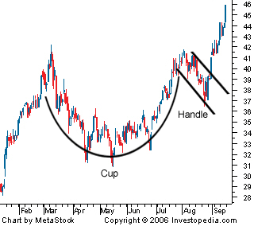

A pattern on bar charts resembling a cup with a handle. The cup is in the shape of a "U" and the handle has a slight downward drift. The right-hand side of the pattern has low trading volume. It can be as short as seven weeks and as long as 65 weeks.
As the stock comes up to test the old highs, the stock will incur selling pressure by the people who bought at or near the old high. This selling pressure will make the stock price trade sideways with a tendency towards a downtrend for four days to four weeks... then it takes off. Below is an example of a cup and handle chart pattern:
A couple points on trying to detect cup and handles: Length - Generally, cups with longer and more "U" shaped bottoms, the stronger the signal. Avoid cups with a sharp "V" bottoms. Depth - Ideally, the cup should not be too deep. Also, avoid handles which are too deep since the handles should form in the top half of the cup pattern. Volume - Volume should dry up on the decline and remain lower than average in the base of the bowl. It should then increase when the stock finally starts to make its move back up to test the old high. Retest (of old high) - doesn't have touch or come within a few ticks of old high. However, the further the top of the handle is away from the highs, the more significant the breakout needs to be.
{kind=link}